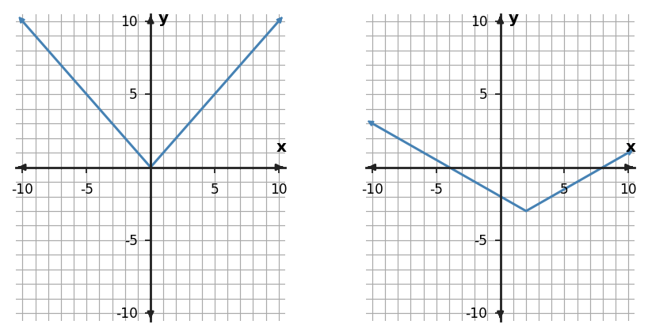
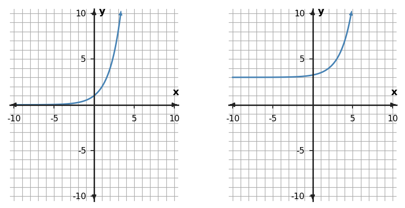

Describe the horizontal and vertical translation from $f(x)=|x|$ to $g(x)=|x+4|-2$.
Describe the horizontal and vertical translation from $f(x)=|x|$ to $g(x)=|x+4|-2$.
Shift 4 units left and 2 units down.
Write a transformed rule for $f(x)=3^x$ shifted 2 units right.
Write a transformed rule for $f(x)=3^x$ shifted 2 units right.
$g(x)=3^{x-2}$.
For $g(x)=2f(x+1)$, transform each listed parent point and describe the coordinate rule.
| Parent $x$ | Parent $y$ |
|---|---|
| -1 | 2 |
| 0 | 0 |
| 1 | 3 |
For $g(x)=2f(x+1)$, transform each listed parent point and describe the coordinate rule.
| Parent $x$ | Parent $y$ |
|---|---|
| -1 | 2 |
| 0 | 0 |
| 1 | 3 |
Each x-coordinate moves left 1 and each y-coordinate is multiplied by 2. The new points are $(-2,4),(-1,0),(0,6)$.
Compare $g(x)=2(x-3)^2-4$ with $f(x)=x^2$. Describe the vertical scaling and translations.
Compare $g(x)=2(x-3)^2-4$ with $f(x)=x^2$. Describe the vertical scaling and translations.
Vertical stretch by factor 2, shift right 3, and shift down 4.
Compare the parent graph on the left with the transformed graph on the right. Describe the transformation using key features, not just overall appearance.

Compare the parent graph on the left with the transformed graph on the right. Describe the transformation using key features, not just overall appearance.
The second absolute-value graph is vertically compressed by a factor of $\tfrac12$, shifted right 2, and shifted down 3.
A transformation takes $f(x)$ to $g(x)=f(x-5)+2$. State the horizontal and vertical shifts.
A transformation takes $f(x)$ to $g(x)=f(x-5)+2$. State the horizontal and vertical shifts.
Right 5 units and up 2 units.
The point $(3,-4)$ lies on $y=f(x)$. Under $g(x)=2f(x)$, where does that key point move?
The point $(3,-4)$ lies on $y=f(x)$. Under $g(x)=2f(x)$, where does that key point move?
$(3,-8)$. The x-coordinate stays fixed and the y-value is multiplied by 2.
A quadratic height model $h(t)$ is recalibrated so every measured height is 1.5 meters lower, while time is unchanged. Write the transformed model in function notation and explain the graph change.
A quadratic height model $h(t)$ is recalibrated so every measured height is 1.5 meters lower, while time is unchanged. Write the transformed model in function notation and explain the graph change.
Use $g(t)=h(t)-1.5$; every point moves 1.5 units down. Horizontal locations of key features do not change.
Compare $x^2$, $|x|$, and $2^x$. If each parent is replaced by $f(x+2)+4$, what transformation is common to all three families?
Compare $x^2$, $|x|$, and $2^x$. If each parent is replaced by $f(x+2)+4$, what transformation is common to all three families?
Each graph shifts 2 units left and 4 units up; the key features moved depend on the family.
Start with $f(x)=x^2$. Write the rule for a graph shifted 3 unit(s) left and 4 unit(s) down.
Start with $f(x)=x^2$. Write the rule for a graph shifted 3 unit(s) left and 4 unit(s) down.
$g(x)=(x+3)^2-4$.
Describe the horizontal and vertical translation from $f(x)=|x|$ to $g(x)=|x+1|-5$.
Describe the horizontal and vertical translation from $f(x)=|x|$ to $g(x)=|x+1|-5$.
Shift 1 unit(s) left and 5 unit(s) down.
Write a transformed rule for $f(x)=2^x$ shifted 3 unit(s) left.
Write a transformed rule for $f(x)=2^x$ shifted 3 unit(s) left.
$g(x)=2^{x+3}$.
For the transformation $g(x)=-2f(x-1)$, use parent key points $(-1,1)$, $(0,0)$, and $(1,1)$ to list the transformed points.
For the transformation $g(x)=-2f(x-1)$, use parent key points $(-1,1)$, $(0,0)$, and $(1,1)$ to list the transformed points.
The transformed points are $(0,-2)$, $(1,0)$, $(2,-2)$. Each x-coordinate shifts by 1; each y-coordinate is multiplied by -2.
Compare $g(x)=-0.5|x+3|-4$ with $f(x)=|x|$. Describe the reflection/stretch/compression and translations.
Compare $g(x)=-0.5|x+3|-4$ with $f(x)=|x|$. Describe the reflection/stretch/compression and translations.
reflection across the x-axis; vertical compression by factor 0.5; shift 3 unit(s) left; shift 4 unit(s) down.
Compare the parent graph on the left with the transformed graph on the right. Describe the transformation using key features, not just overall appearance.

Compare the parent graph on the left with the transformed graph on the right. Describe the transformation using key features, not just overall appearance.
The second exponential is shifted left 1 and down 2.
A transformation takes $f(x)$ to $g(x)=f(x+2)+5$. State the horizontal and vertical shifts.
A transformation takes $f(x)$ to $g(x)=f(x+2)+5$. State the horizontal and vertical shifts.
Left 2 units and up 5 units.
The point $(-2,5)$ lies on $y=f(x)$. Under $g(x)=-2f(x)$, where does that key point move?
The point $(-2,5)$ lies on $y=f(x)$. Under $g(x)=-2f(x)$, where does that key point move?
$(-2,-10)$. The x-coordinate stays fixed; the y-value is multiplied by -2.
A temperature model $T(t)$ is recalibrated so every reading is 2 degrees lower while time is unchanged. Write the transformed model and describe the graph change.
A temperature model $T(t)$ is recalibrated so every reading is 2 degrees lower while time is unchanged. Write the transformed model and describe the graph change.
$g(t)=T(t)-2$; every point moves down 2 units.
For $y=5(3)^x+2$, state the y-intercept and horizontal asymptote.
For $y=5(3)^x+2$, state the y-intercept and horizontal asymptote.
$y$-intercept $(0,7)$; horizontal asymptote $y=2$.
The right-hand graph in the exponential panel is a transformation of $2^x$. Identify the horizontal asymptote and whether it represents growth or decay.

The right-hand graph in the exponential panel is a transformation of $2^x$. Identify the horizontal asymptote and whether it represents growth or decay.
The graph is growth and has horizontal asymptote $y=3$.
State the growth factor and write one exponential rule that fits if the first value occurs at $x=0$.
| $x$ | 0 | 1 | 2 | 3 |
|---|---|---|---|---|
| $y$ | 3 | 12 | 48 | 192 |
State the growth factor and write one exponential rule that fits if the first value occurs at $x=0$.
| $x$ | 0 | 1 | 2 | 3 |
|---|---|---|---|---|
| $y$ | 3 | 12 | 48 | 192 |
Growth factor 4; $y=3(4)^x$.
Solve $x^2+4x-5=0$ by completing the square.
Solve $x^2+4x-5=0$ by completing the square.
$(x+2)^2=9$, so $x=1$ or $x=-5$.
Rewrite $y=x^2+6x+2$ in vertex form by completing the square, then state the vertex.
Rewrite $y=x^2+6x+2$ in vertex form by completing the square, then state the vertex.
$y=(x+3)^2-7$; vertex $(-3,-7)$.
What term must be added to $x^2+6x$ to create a perfect-square trinomial? Write the resulting square.
What term must be added to $x^2+6x$ to create a perfect-square trinomial? Write the resulting square.
Add 9; $x^2+6x+9=(x+3)^2$.